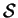
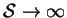
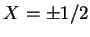
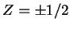
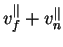
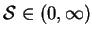

Solution of (7.20) requires a particular integral. Two rational choices for this integral can be obtained by considering the asymptotic solutions for large and small .
The solution valid in the limit
 is (cf. equation
4.36):
This result, due to Jones and Furry (1946), and used by Batchelor (1954) and many others (Vest & Arpaci 1969; Hart 1971; Gershuni & Zhukhovitskii 1976, ch. 10; Nagata & Busse 1983; Daniels 1985; Chait & Korpela 1989) in the analysis of narrow cavities, describes the flow between infinite parallel plane vertical walls. It satisfies (7.21) at  but not at . The combination  was noted by Aung (1972) as the solution for the transversely heated duct problem with .
The solution of equation (7.20) matching the boundary conditions
(7.21) then follows readily from Fourier's method:
For small , the geometry approaches that of the flow in the
experiments of Hele-Shaw
(1898, 1899)--the dominant effect
on the flow being from the viscous damping of the end-walls. These
experiments were analysed by Stokes (1899) who showed that the
general form for the vertical velocity component is:
Both (7.25) and (7.28) are exact solutions of (7.20) and (7.21), and also; when combined with (7.16), (7.13) and (7.22); the full equation of motion (2.54), for all values of .